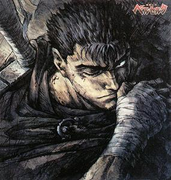

Forums galactiques > Assemblée Galactique : diplomatie officielle > Troubles nocturnes [RP]
Pages : 1
| galactor Respect diplomatique : 307  20/06 ETU 22:48 | Score : 13 Détails Rp privé ne pas poster merci.
Ambiance musicale recommandée : http://s.coavoux.free.fr/G0/Musique/(mgs2_cd2)08-Lady_Luck_Revisited.mp3 Une nouvelle journée de travail s'achevait pour Galactor, il était épuisé. Il enleva ses chaussures ainsi que son Tee-shirt. Il entra dans sa chambre, la baie vitrée laissait passer la pale lumière de la lune. Sans allumer la lumière il posa son vêtement sur une chaine et puis dans un ultime effort se laissa tomber sur son lit double. Il se tourna sur le dos et saisit une commande sur sa table de chevet. En une pression il fit ouvrir la fenêtre afin que l'air frais pénètre à l'intérieur de la pièce. Bercé par le bruit des feuilles Galactor se sentait progressivement partir dans un de ses autres rêves sur les Red Tantra et l’Empire des Sens. Il repensait souvent à ce temps par nostalgie, regrettant leurs départs successifs. C’était repartit, il revoyait Chevrozer devant lui. Il tendit la main pour la caresser mais il sentit les draps glisser sous sa main. En bougeant il s’était plus ou moins réveillé. Il inspira profondément ouvrant les yeux. Quelque chose était juste devant ses yeux. Il leva la main comme pour l’attraper. Mais sa main fendit l’air et retomba sur sa hanche. Il était pourtant certain d’avoir quelque chose devant lui. Il cligna plusieurs fois des yeux, comme pour vérifier qu’il était bien réveillé et que la « chose » était toujours la. C’est alors qu’elle se mit à prendre une autre forme qu’une masse translucide. Galactor vit se dessiner peu à peu un corps, puis des membres. Il vit enfin un visage. Un visage qui lui était très familier. Galactor n’en croyait pas ses yeux, devant lui se modélisait Solon. SOLON!!!??? On vit un sourire se dessiner sur le visage de Solon, cependant il ne répondit rien. Galactor l’avait-il vraiment devant lui ? D’un ton hésitant il recommença : Solon ? C’est bien tu te maitrises, j’ai cru que t’allais continuer à hurler au loup longtemps. C’était bien la voix de Solon qu’il venait d’entendre, seulement elle était dans sa tête. Hey ! Sors de là ! Dit, c’est Origine qui te rend si grincheux ? Du calme, t’es tout tendu là ! Ouais bon excuse moi, mais ca fait tellement longtemps que t’es parti… Comment ca va au Nirvana ? Je ne suis pas là pour te raconter la vie du Nirvana. Si je suis réapparu dans cette forme plus ou moins humaine c’est que j’ai plus important à faire que forniquer toute la journée, et tu sais comme c’est sacré. Ah, et euh, c’est grave ? Galactor, le temps à effriter ta passion pour le tantrisme comme la mer érode les rochers. Il faut que tu ouvres tes chakras, car là haut on voit que la fin approche T’es marrant toi, tu débarques et tu me dis « vazy cool man », détend toi ! Sauf que la t’as un peu oublié le popers pour que je fasse ça dans la seconde. Si tu crois qu’ici c’est les vacances tu te goures mon p’tit père. C’est exactement ce que je te disais, tu es trop irritable, et tu deviens agressif. Laisse-moi te dire que de là-haut, on a une vision plus objective de la situation que tout le monde. Il va falloir corriger ca Galac. Soupir Ouais excuse moi, c’est que bon, en ce moment je fais des journées plutôt chargées je suis à cran toute la journée avec ces généraux incompétents… Qu’est ce que tu veux que je fasse ? Je sais, je t’observe depuis quelques jours. Ce que je veux que tu fasses, que tu réveilles le Red qui sommeil en toi. Et pour commencer, trouve-toi une copine. Bon dors maintenant, et n’oublie pas que je te regarde faire. Galactor sentit ensuite une immense chaleur au visage, sa vision se troubla sous le regard bienveillant de Solon. Puis la chaleur se rependit à tous ses membres, il sentit alors sa respiration se couper. Cherchant l’air tant bien que mal cloué dans son lit il perdit connaissance peu à peu. Voila pour toi un avant-gout du Nirvana…. © Solon | ||
| galactor Respect diplomatique : 307 09/07 ETU 22:25 | Score : 2 Détails C’était une nuit sans lune, une nuit calme. Seul le bruit de vent dans les feuilles venait perturber le silence ambiant. Du moins, c’est ce que l’on ressentait de prime abord. Car en tendant un peu plus l’oreille on décelait au loin un ronflement régulier. Mais qui diantre pouvait faire un tel bruit ? La chose ne pouvait être qu’énorme, car on l’entendait à 500 mètres à ronde. Surement encore un de ces yétis poilus à grands pieds…
A la surprise générale ( qui a dit non ? ), les déchirements sonores venaient de l’appartement de notre bon vieux Galactor ! C’est sa réputation qui en prenait un coup là… Et bien non ! Que nenni ! L’ours des cavernes qu’était Galactor dormait déjà, et sans bruit s’il vous plait ! La situation devenait même angoissante ( Prenez gardes lecteurs !!), car Galactor était par définition célibataire (Avis aux demoiselles aux formes généreuses). Solon lui était dans la pièce en lévitation depuis déjà un certain moment, et le bruit, il en avait vite vu la cause. Bien qu’il ait tout d’abord pensé à une potentielle amie de Galactor aux habitudes étranges, car le bruit venait de sous le lit, après un rapide coup d’œil il avait déduit que le bruit venait d’une petite boule de poil à quatre pattes. - Et m****, voilà qu’il a décidé de se coucher tôt ce soir. Y’a plus qu’à réveiller la bête Rapidement Solon se métamorphosa en radio. Apres quelques tours de bouton pour régler la fréquence, une musique se fit entendre : http://www.radioblogclub.fr/open/46941/chick_habit___april_march/Death%20Proof%20-%20April%20March%20-%20Chick%20habit La musique tout d’abord douce, se faisait de plus en plus forte, afin que Galactor se réveille Hang up the chick habit Hang it up, daddy, Or you'll be alone in a quick Hang up the chick habit Hang it up, daddy, Or you'll never get another fix MIAAAAAAOUUUUU !!!!!! Le chat, aux végétations plus que végétatives, sortit de sous le lit heurtant la table basse, le X-Com de Galactor tomba et émit un « Crac ». Mais il en fallait plus pour réveiller la « bête ». I'm telling you it's not a trick Pay attention, don't be thick Or you're liable to get licked You're gonna see the reason why When they're spitting in your eye They'll be spitting in your eye Galactor pris une inspiration profonde, il revenait progressivement à lui. Solon coupa la musique et repris sa forme habituelle. Galactor tendit son bras pour attraper son X-Com voir l’heure mais sa main se referma sur elle-même. - Putain quelle heure il est ? C’est quoi ce bordel ?? Hey Solon, qu’est ce que tu fous là ? - Devine, une partie de ping-pong avec ton chat, ca se voit pas? D’ailleurs il s’est fait mal en prenant la porte en plein tronche. - Un ping-pong ? Et tu m’invite pas à te foutre une taulée ? - Pourquoi je te réveille à ton avis ? - Je t’en ficherais du faire du ping-pong à 2h du mat ! - Pour information, il est 22h25. C’est la drague intensive qui te fatigue tant que ca ? Non pasque, je t’observe et je vois que tu ne t’attelles pas trop à ta tache. Bon à défaut de te trouver une gonzesse tu devrais faire un tour demain sur des lieux de cultes tantriques. C’est ptetre le tantrisme qui va te rendre ton style et ta technique de drague... - Attends mais c’est pas possible ! Je peux pas y aller ! - Et pourquoi ? T’as mieux à faire ? - Ben non mais ca sera plus des Troubles nocturnes après ! Soupir - … T’as pas mieux comme excuse bidon ? - Bon j’irais un de ses jours… Dit avant de te casser et de me laisser réveillé alors que j’avais réussi à dormir, tu me refais une piqure de tantrisme ? - Ha non ! Démerde-toi ! Fallait te coucher plus tard ! L’âme de Solon s’éleva, elle se dirigea vers la fenêtre entre ouverte. - Hey non reviens la ! L’âme de Solon fit volte-face. Galactor sentit ensuite une immense chaleur au visage et sa vision se troubla. Il adorait cette sensation, tous ses membres maintenant ressentaient cette chaleur. Solon l’avait endormit qu’une seule fois mais il connaissait le rituel par cœur. L’oxygène lui manquait, il perdit connaissance. - Je t’ai eu ! © Solon | ||
| galactor Respect diplomatique : 307 13/07 ETU 16:05 | Score : 10 Détails Désolé pour le retard, ceci aurait du arriver hier, mais manque de temps. Les invasions eclairs malgré leur nom, c'est long :p
Au petit matin, élardé sur son lit, a moitié sous les draps, un pieds dépassant largement, Galac était sûrement rentré complètement bourré hier soir. Ses fringues étaient posées en boule au pied du plumard, sur une tapis de caleçons et de chaussettes jonchant le sol, une magnifique moquette en sous-vêtements véritables. Telle était la garçonnière de ce vieux Bouc de Galac, un vrai taudis ! Cependant, au milieu de ce fourbie, a coté de la fenêtre, subsistait un petit coin propre, apparemment entretenu avec minutie, ou les rayons du soleil venaient scintiller sur les objets apparemment très chéris par l'habitant des lieux. Dans environ 1 m² ou l'on pouvait apercevoir le parquet, les chaussettes étant poussées un peu plus loin, se trouvait une table et un mannequin. Sur ce mannequin, des vêtements, sans un seul pli, sans poussière, ce n'est était autre que la tunique de combat que Galac portait il y a bien des années, a sa grande époque, l'épopée des Red-T. Sur la table, la même propreté régnait. Il y était entreposé de nombreuses photos, des souvenirs qui resteraient a jamais gravés dans le coeur du fédé qu'il était. Thanatos fouettant Chevro, Solon en plein échange de bonnes manières avec Sayya et Angelus, les observant, en train de se palucher, ou bien encore Janus-Jana sautant sur le dos de Chiana, Eiganjo qui courrait partout après les vibromasseurs de Yulée, Mac et Sayan avec deux parfaites inconnues dont Galac avait toujours préféré ignorer le destin, puis aux centre de celles-ci, Chil Powo et Galactor se donnant une accolade fraternelle...Et encore bien d'autres clichés. C'est içi que le vieux garçon venait méditer, lorsque des sujets importants le tracassait, dans ce lieu ou il pouvait fuir le monde d'aujourd'hui et rejoindre le Nirvana rien qu'en reniflant le String que Chiana lui avait laissé avant de partir...Un lieu de Mélancolie, de plaisir, un véritable refuge pour Gala ! Au fur et a mesure que le matin avançait, les rayons du soleil, qui illuminaient le lieu Saint, se décalaient petit a petit. Ils avançaient doucement sur le lit pour venir chatouiller les paupières du mollusque encore endormi. Lorsque la luminosité émise devint trop importante, les Yeux du résident s'ouvrirent. Les sourcils froncés car ses pupilles n'étaient pas encore habituées a la lumière, Galac se redressa. Il passa sa main dans ses cheveux, se frottant le crâne, la soirée d'hier avait du être longue et difficile... Aaaaah Ma Tête putain...J'ai mal ! Et de nouveau cette sensation, j'ai encore, j'ai...Ddd Du Rouge... Un casque, un casque rouge... Solon ! C'était encore lui. L'Homme s'extirpa de son lit, tant bien que mal et tituba sur 2 ou 3 pas avant de se stabiliser complètement sur ses appuis. Dans d'amples mouvements, il s'étira puis se pencha pour ramasser ses affaires posées sur le sol, mais au moment ou il allait rentrer en contact avec les fringues toutes sales et froissées, sa main se stoppa net ! Cette Sensation encore, comme une voix qui lui disait d'agir, qui le guidait. Et apparemment cette petite voix ne voulait pas qu'il remette ses vêtements. Il se redressa donc, faisant un tour d'horizon pour vérifier qu'il était bien seul, d'être sur que personne n'était en train de se jouer de lui. Et lorsqu'il finit son tour, son regard se posa sur sa vieille tunique, scintillante sous les rayons du soleil. Il s'en approcha, la caressant délicatement, comme on caresse un enfant. Oui c'était cela que la petite voix voulait ! Galac, n'écoutant plus que ce 7ème sens Oui, le 6ème c'est son goût prononcé pour l'Astro-Pastis XD ne pu résister, il enfila sa tunique de combat, et rechaussa ses vieilles bottes. A ce moment, son premier Caporal frappa a la porte. Oui ? C'est le Caporal Séraphin ! Au rapport mon Commandant. Entrez La porte s'ouvrit et l'Homme resta sur le palier, bouche bée... Et ben quoi Séraphin, c'est pas la première fois que vous me voyez la porter... Entrez Que vous amène-t-il donc içi ? Le caporal entra, d'un pas hésitant... Bien mon Commandant... Je viens vous annoncer que quelques invasions ont échouées, nos troupes ont été bombardé. Mais l'essentiel est là ! Malgré environ 5% regrettables de pertes, nous avons approximativement 680 des 750 systèmes que vous aviez demandé d'envahir. Quuuuuuuoi ?!? De Quoi? T'as dit "Envahir", "Ordonner", et "750 systèmes" dans la même phrase...Y'a un soucis Séraphin t'as du rêver mec, c'est impossible...J'ai JAMAIS donné ces ordres ! Abasourdi, l'officier se tue pendant quelques secondes fixant son Supérieur qui paraissait "péter un boulot" Puis il finit pas se reprendre Mais Monsieur, vous me l'avez demandé vous même la nuit dernière. Les Attaques ont eu lieu cette nuit, j'ai couru pour vous annoncer les résultats par moi même comme vous me l'aviez demandé. Monsieur ça fait des jours que vous lancez des ordres étranges a des heures inimaginables. En début de semaine c'est encore vous qui avez réclamé le déploiement des flottes. Vous vous en rappelez de ça ? Les ordres donnés a 1h du matin, depuis la planète Primera Uno! Excusez moi mon Commandant, mais euuh vous n'avez pas l'air d'être dans votre assiette si je puis me permettre... Je euuuuh, je...Attendez, justes 5 minutes, laissez moi seul ! Sur ces Ordres, le Caporal sortit du dépotoir, laissant seul un homme complètement désemparé Galactor s'assit sur le rebord de son lit C'est pas possible...mais c'est pas possible ! Qu'est ce qui m'arrive ? Je deviens fou. C'est toi là haut hein ? Allez avoue que c'est toi... SoloOoOoon Avouuuuue ! Ca peut être que lui, je vois que ça. Mais pourquoi ? Ou tu veux en venir Solounet...?!? Bon je vais découvrir ça... Galactor se mis debout, et d'un pas énergique il partit rejoindre Séraphin qui devait l'attendre derrière la porte et qui a l'heure qu'il est pensait sûrement que son commandant était tombé fou. En avant Séraphin, tu m'as dit que des ordres avaient été lancé depuis Primero Uno ? Et bien allons y...En route ! Il n'y a pas une minute a perdre. |
Pages : 1
Forums galactiques > Assemblée Galactique : diplomatie officielle > Troubles nocturnes [RP]